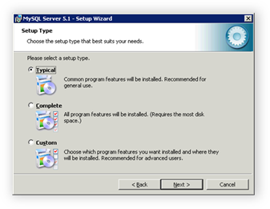
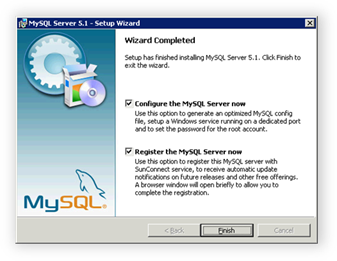
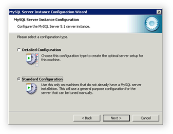
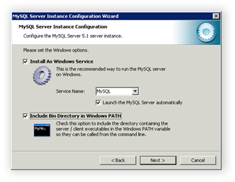
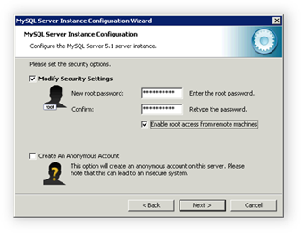
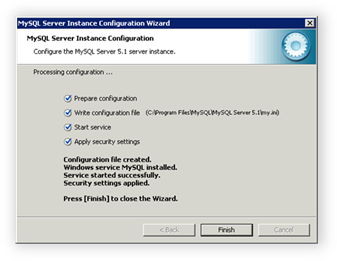
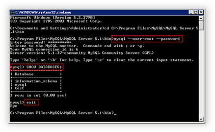

Installing MySQL Server
Translations:
Many applications written in PHP require a MySQL database server. You can download the free MySQL Community Server from the following location:
http://dev.mysql.com/downloads/mysql/5.1.html
Select your platform (Windows, 32-bit or 64-bit edition) and then download the Windows Essentials package. (Typically this is the smallest one under the selected platform.)
Run the installation wizard and for Setup Type, select Typical.

After installation, proceed to the MySQL service configuration.

Select Standard Configuration and then click Next.

Specify settings for the MySQL Windows service.

Specify a password for the root account and select Enable root access from remote machines. In some cases this can simplify configuring MySQL for your applications. Click Next.

For the next step, click Execute. All configuration steps must be successfully completed.

To test the MySQL service, open a command prompt, switch to the MySQL installation folder, and run some MySQL commands (such as displaying the list of available databases). The following illustration shows an example of how to test MySQL.
